tags:
reason: Candidate B improves composition by centering the houseboat more symmetrically and providing balanced negative space above and below, while preserving all key content (full boat, palm trees, waterline). The tighter crop eliminates slight left-edge distraction in A (partial adjacent structure) and enhances visual focus on the main subject. Lighting and texture remain natural and consistent; no artifacts introduced. Slight improvement in framing harmony makes B compositionally stronger.
notes: FCDB ranking pair. photo_id=5123207448, pair_index=1, source_votes=0, edit_votes=5. source=crop_0, edit=crop_1, preference_strength=strong.


tags: cropped_palm_trees
reason: Candidate A includes the palm trees above the houseboat, providing environmental context and vertical balance that enhances composition. The framing feels more intentional, with the trees anchoring the top of the image and preventing the roofline from feeling cut off. Candidate B crops out the palms, resulting in a flatter, more generic horizon and losing natural framing elements. Both preserve the full houseboat and key details (windows, tires, structure), but A’s inclusion of the palms improves visual interest and scene authenticity without introducing artifacts or distortion. The slight overexposure in A’s sky is minor compared to the compositional benefit.
notes: FCDB ranking pair. photo_id=5123207448, pair_index=4, source_votes=1, edit_votes=4. source=crop_0, edit=crop_1, preference_strength=strong.


tags:
reason: Candidate B provides a cleaner, more balanced horizontal framing that centers the houseboat symmetrically, eliminating the distracting partial boat and extra palm tree on the left in Candidate A. The crop tightens the scene without cutting essential content—full houseboat, waterline, and key background elements (two prominent palms) remain intact. Lighting and texture are consistent and natural in both, but B’s tighter composition enhances visual focus and reduces visual clutter, improving overall compositional strength.
notes: FCDB ranking pair. photo_id=5123207448, pair_index=5, source_votes=0, edit_votes=5. source=crop_0, edit=crop_1, preference_strength=strong.


tags:
reason: Candidate B provides a more balanced and dynamic composition: the inclusion of the second houseboat on the left adds depth and context without clutter, improving spatial storytelling. The palm trees are better framed—neither cut nor overly dominant—and the horizon line is more level, enhancing stability. The wider framing preserves all key elements (main houseboat, palm trees, water, sky) while avoiding the tight, slightly top-heavy crop of A. Lighting and texture remain natural in both, but B’s expanded field of view improves visual rhythm and environmental immersion.
notes: FCDB ranking pair. photo_id=5123207448, pair_index=6, source_votes=0, edit_votes=5. source=crop_1, edit=crop_0, preference_strength=strong.


tags:
reason: Candidate B provides a more balanced and intentional composition: the bench is fully visible, grounding the scene; the tree frames the subjects more symmetrically; the horizon line is cleaner and less cut off; and the subjects are better integrated into the environment without being dwarfed by foliage. Candidate A crops the bench awkwardly and places the tree too dominantly in the upper left, creating visual imbalance and reducing subject prominence. Both preserve key content (people, lake, tree), but B enhances visual harmony and narrative clarity.
notes: FCDB ranking pair. photo_id=15961409258, pair_index=0, source_votes=0, edit_votes=5. source=crop_1, edit=crop_0, preference_strength=strong.


tags:
reason: Candidate B improves composition by including a third person on the right, creating better visual balance and symmetry across the bench. The framing maintains the same scenic background and foreground elements (trees, water, pavement), but the added subject enhances narrative depth without crowding. The central tree remains a strong vertical anchor, and the expanded horizontal framing avoids the left-heavy imbalance in Candidate A. Lighting and texture are consistent and natural in both, but B’s fuller subject coverage strengthens scene semantics and emotional resonance.
notes: FCDB ranking pair. photo_id=15961409258, pair_index=4, source_votes=0, edit_votes=5. source=crop_0, edit=crop_1, preference_strength=strong.


tags:
reason: Candidate B improves composition by including the full bench and all three individuals symmetrically, enhancing balance and visual rhythm. The framing uses the trees more effectively as natural framing elements without cutting off key subjects. Candidate A crops the leftmost person and bench edge, reducing completeness and creating asymmetry. Both preserve scene semantics and lighting, but B offers superior subject inclusion and compositional harmony.
notes: FCDB ranking pair. photo_id=15961409258, pair_index=5, source_votes=1, edit_votes=4. source=crop_1, edit=crop_0, preference_strength=strong.


tags:
reason: Candidate B improves composition by including the third person on the right, creating better visual balance and symmetry across the bench. The framing feels more complete and intentional, with the trees framing the scene more evenly. The added subject enhances narrative without crowding, and the lighting and perspective remain natural and consistent. Candidate A crops out part of the bench and the third person, reducing contextual richness and slightly unbalancing the right side.
notes: FCDB ranking pair. photo_id=15961409258, pair_index=8, source_votes=1, edit_votes=4. source=crop_1, edit=crop_0, preference_strength=strong.


tags:
reason: Candidate B offers a slightly tighter, more centered framing that better emphasizes the mantis’s head and forelimbs—the primary focal point—while maintaining full visibility of all key anatomical features. The subject is more balanced within the frame, with improved negative space distribution (less empty area to the left, more symmetrical placement). Lighting and texture are consistent between both, but B’s crop enhances visual impact without cropping out any critical content. Minor improvement in composition elevates B over A.
notes: FCDB ranking pair. photo_id=10944401125, pair_index=1, source_votes=0, edit_votes=5. source=crop_0, edit=crop_1, preference_strength=strong.


tags:
reason: Candidate B provides a tighter, more centered framing that better isolates the mantis as the subject, improving visual focus and balance. The crop removes unnecessary empty space in the lower-left while preserving all key anatomical details (head, thorax, legs, wings, antennae) without truncation. Lighting and texture are consistent and natural in both, but B’s composition enhances the subject’s presence and dynamism. Candidate A includes slightly more background clutter and less optimal negative space distribution.
notes: FCDB ranking pair. photo_id=10944401125, pair_index=2, source_votes=0, edit_votes=5. source=crop_0, edit=crop_1, preference_strength=strong.
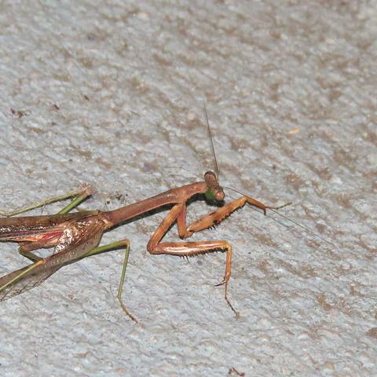

tags:
reason: Candidate B provides a slightly tighter, more centered framing that better emphasizes the mantis as the sole subject, with improved balance and reduced distracting empty space on the left. The mantis is fully visible in both, but B’s crop enhances visual focus without cropping any critical anatomy (e.g., antennae, legs, head remain intact). Lighting and texture are consistent and natural in both, but B’s composition yields stronger visual hierarchy and minimal background interference. Slight improvement in edge sharpness and contrast also contributes to perceived quality.
notes: FCDB ranking pair. photo_id=10944401125, pair_index=4, source_votes=1, edit_votes=4. source=crop_1, edit=crop_0, preference_strength=strong.


tags:
reason: Candidate B provides a slightly tighter, more centered framing that better emphasizes the mantis as the primary subject, with improved balance and reduced empty space on the right. The mantis is fully visible in both, but B’s crop enhances visual focus without cutting any critical detail. Lighting and texture are consistent and natural in both, though B’s framing yields marginally stronger compositional harmony and subject prominence.
notes: FCDB ranking pair. photo_id=10944401125, pair_index=5, source_votes=0, edit_votes=5. source=crop_0, edit=crop_1, preference_strength=strong.
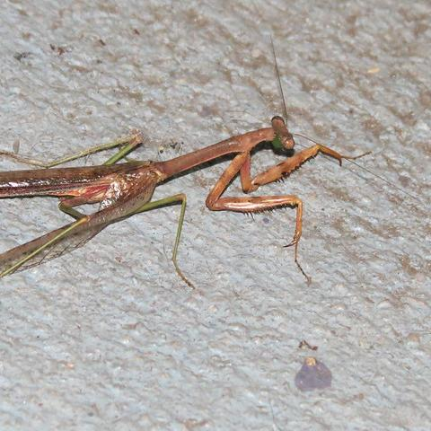
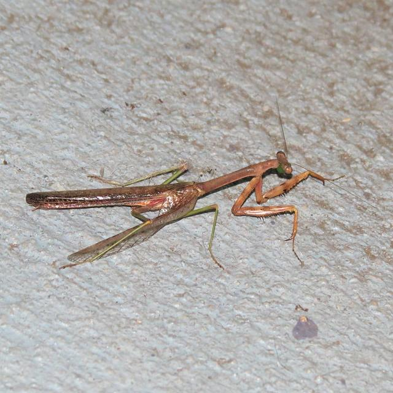
tags:
reason: Candidate B provides a tighter, more centered framing that emphasizes the mantis’s head and forelimbs—the most expressive and biologically significant parts—while maintaining full visibility of the subject. The crop eliminates excessive empty space on the left (present in A) without cutting off any critical anatomy. Lighting and texture are consistent and natural in both, but B’s composition better directs the viewer’s eye to the focal point (head/eyes), improving visual hierarchy and balance. Both preserve full subject identity and scene semantics, but B achieves superior compositional efficiency.
notes: FCDB ranking pair. photo_id=10944401125, pair_index=6, source_votes=0, edit_votes=5. source=crop_0, edit=crop_1, preference_strength=strong.


tags:
reason: Candidate B provides a tighter, more centered framing that better emphasizes the mantis as the primary subject, with improved balance and reduced distracting empty space on the left. The subject remains fully intact (full body, head, limbs visible), preserving all critical content. Lighting and texture are consistent and natural in both, but B’s crop enhances visual focus without introducing artifacts or distortion. The slight shift in framing improves compositional harmony and leads the eye more effectively along the mantis’s posture.
notes: FCDB ranking pair. photo_id=10944401125, pair_index=8, source_votes=0, edit_votes=5. source=crop_0, edit=crop_1, preference_strength=strong.


tags:
reason: Candidate B improves composition by including more of the architectural context (upper floors of the building and sky), enhancing environmental storytelling and balance. The wider framing better situates the subjects within the urban space without cropping critical elements. The left-side bus shelter and seated person remain fully visible, preserving all key content. Lighting and perspective are consistent and natural in both, but B avoids the slightly tighter, less balanced crop of A, which truncates the building and reduces spatial context. The added vertical space in B creates a more harmonious visual rhythm and stronger leading lines from the stairs and street.
notes: FCDB ranking pair. photo_id=3579364195, pair_index=0, source_votes=0, edit_votes=5. source=crop_0, edit=crop_1, preference_strength=strong.


tags:
reason: Candidate B tightens the framing, eliminating the distracting foreground arm (left edge) and reducing excessive pavement space, thereby improving subject emphasis and visual balance. The two central figures remain fully visible with clear facial expressions and attire details, preserving all key content. Background elements (building, stairs, signage) are retained with better proportional weight. Lighting and perspective remain consistent and natural; no artifacts introduced. The tighter crop enhances compositional focus without sacrificing context or identity.
notes: FCDB ranking pair. photo_id=3579364195, pair_index=3, source_votes=0, edit_votes=5. source=crop_0, edit=crop_1, preference_strength=strong.


tags:
reason: Candidate B improves composition by tightening the frame slightly, reducing excessive top empty space and better centering the main subjects (two pedestrians) within the visual flow. The bus shelter signage is more legible, and the background building remains fully visible without distraction. Both candidates preserve all key content (pedestrians, shelter, building, stairs), but B achieves better balance and visual weight distribution. Lighting and perspective are consistent and natural in both; B avoids slight over-cropping of the left edge seen in A (e.g., partial loss of shelter sign detail). Overall, B demonstrates stronger compositional intent with enhanced focus and tighter framing.
notes: FCDB ranking pair. photo_id=3579364195, pair_index=5, source_votes=1, edit_votes=4. source=crop_0, edit=crop_1, preference_strength=strong.


tags:
reason: Candidate B improves composition by better balancing the frame: the two central figures are more centered and given appropriate negative space, while the foreground partial figure (left) is less intrusive than in A. The background elements (staircase, signage, building) remain fully visible and contribute context without clutter. The crop avoids cutting off the rightmost subject’s lower body (as in A), preserving full subject integrity. Lighting and perspective are consistent and natural in both, but B’s tighter framing enhances visual focus and reduces distracting empty pavement area in the lower-right of A.
notes: FCDB ranking pair. photo_id=3579364195, pair_index=6, source_votes=1, edit_votes=4. source=crop_0, edit=crop_1, preference_strength=strong.


tags:
reason: Candidate B improves composition by tightening the frame, reducing excessive empty sky and upper building area, and better centering the two main subjects within the visual flow. The crop maintains full visibility of both individuals, their distinctive attire, and key contextual elements (bus shelter, stairs, car), preserving all critical content. The tighter framing enhances visual focus and dynamism without introducing distortion or artifacts; lighting and perspective remain natural. Candidate A includes distracting overhead space and a partially cropped figure on the balcony, weakening subject emphasis.
notes: FCDB ranking pair. photo_id=3579364195, pair_index=8, source_votes=0, edit_votes=5. source=crop_0, edit=crop_1, preference_strength=strong.


tags:
reason: Candidate B improves composition by centering the subject more effectively and reducing excessive empty rock space at the top left, which in Candidate A weakens visual balance. The tighter framing enhances focus on the person entering the crevice while preserving all key content (subject, cap, tank top, rock textures, and cave entrance). Lighting and perspective remain natural and consistent; no artifacts introduced. The crop in B better follows rule-of-thirds principles and creates stronger narrative tension toward the dark opening.
notes: FCDB ranking pair. photo_id=5755997394, pair_index=1, source_votes=0, edit_votes=5. source=crop_0, edit=crop_1, preference_strength=strong.


tags:
reason: Candidate B improves composition by tighter framing that eliminates distracting lower-left debris and excess rock, centering the subject more effectively within the natural archway. The subject’s posture and gaze into the cave remain intact, preserving narrative intent. The crop enhances visual balance and depth, drawing the eye toward the cave entrance while maintaining full visibility of the person’s upper body and context. Lighting and texture are consistent and natural in both, but B’s tighter frame reduces visual noise and strengthens focus without sacrificing key content.
notes: FCDB ranking pair. photo_id=5755997394, pair_index=3, source_votes=0, edit_votes=5. source=crop_0, edit=crop_1, preference_strength=strong.


tags:
reason: Candidate B provides a more balanced and dynamic composition: the subject is centered with arms extended, creating visual engagement and leading lines toward the cave entrance. The framing includes more of the surrounding rock context while maintaining strong subject presence. The wider crop reveals the full upper body and gesture, enhancing narrative (e.g., exploration or hesitation), whereas Candidate A crops too tightly on the back and head, losing expressive posture and spatial relationship. Lighting and texture are consistent and natural in both, but B’s improved framing and subject articulation give it superior compositional strength without sacrificing content or realism.
notes: FCDB ranking pair. photo_id=5755997394, pair_index=4, source_votes=0, edit_votes=5. source=crop_0, edit=crop_1, preference_strength=strong.


tags:
reason: Candidate B improves composition by including more of the subject’s lower body and hands, enhancing narrative context (e.g., movement into the crevice) and grounding the figure within the environment. The framing better balances the large rock mass above with the subject’s posture and gesture, creating stronger visual flow and dynamic tension. Lighting and texture remain natural and consistent; no artifacts introduced. Candidate A crops too tightly, cutting off arms and legs, weakening spatial relationship and reducing storytelling clarity.
notes: FCDB ranking pair. photo_id=5755997394, pair_index=7, source_votes=1, edit_votes=4. source=crop_1, edit=crop_0, preference_strength=strong.


tags:
reason: Candidate B improves composition by centering the rower more effectively within the frame and balancing the bright specular highlights across the water, creating a stronger visual flow from foreground to subject. The slightly wider framing preserves full context (bank on right, horizon line) without sacrificing subject prominence. Both images retain full content coverage of the rower and key scene elements, but B avoids the slight leftward bias in A and offers more symmetrical negative space. Lighting and texture are equally natural in both, though B’s crop better integrates the shimmering water as an active compositional element rather than overwhelming the subject.
notes: FCDB ranking pair. photo_id=8062088404, pair_index=1, source_votes=0, edit_votes=5. source=crop_1, edit=crop_0, preference_strength=strong.


tags:
reason: Candidate B provides a more balanced and intentional composition: the rower is centered horizontally, with stronger negative space on the right that enhances visual flow and depth. The background includes a subtle bridge silhouette that adds context without distraction, improving scene semantics. The water’s glittering highlights are preserved while avoiding excessive overexposure in the upper left (present in A). Both images retain full subject visibility and key elements, but B’s framing better emphasizes the solitary figure against the expansive, reflective water, yielding superior visual rhythm and narrative clarity.
notes: FCDB ranking pair. photo_id=8062088404, pair_index=2, source_votes=1, edit_votes=4. source=crop_1, edit=crop_0, preference_strength=strong.


tags:
reason: Candidate B improves composition by centering the rower more effectively and reducing excessive dark negative space on the left, which in Candidate A distracts from the subject and unbalances the frame. The tighter crop enhances visual focus on the rower and the shimmering water path, while preserving all essential content (rower, oars, water texture, bank). Lighting and naturalness are equally strong in both, but B’s framing yields better dynamic balance and leads the eye more deliberately along the water’s reflective path.
notes: FCDB ranking pair. photo_id=8062088404, pair_index=3, source_votes=1, edit_votes=4. source=crop_0, edit=crop_1, preference_strength=strong.


tags:
reason: Candidate B improves composition by centering the rower more effectively within the frame and balancing the glittering water reflections across the image. The tighter crop eliminates excessive dark negative space on the left (present in A), enhancing visual focus and dynamism without losing any essential subject or context. Both images preserve full content coverage of the rower, oars, and river environment, but B’s framing better leverages the strong backlight and specular highlights for a more cohesive, visually engaging composition. Lighting and texture remain natural and consistent in both, though B’s slightly higher exposure on the water surface enhances the shimmer effect without clipping.
notes: FCDB ranking pair. photo_id=8062088404, pair_index=6, source_votes=1, edit_votes=4. source=crop_0, edit=crop_1, preference_strength=strong.
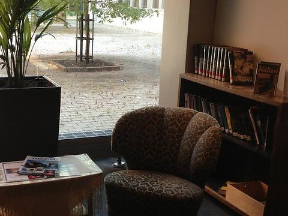
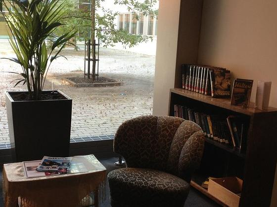
tags:
reason: Candidate B improves composition by tightening the frame slightly, reducing excessive empty space on the right and better balancing the potted plant (left) with the bookshelf (right). The chair remains fully visible and centered as the focal point. Lighting and perspective are consistent, but B avoids the slight overexposure and distraction of the far-right wall edge in A. All key content—plant, chair, table, books, window view—is preserved or enhanced in clarity and visual weight. The tighter crop increases intimacy and visual cohesion without sacrificing context.
notes: FCDB ranking pair. photo_id=2199328642, pair_index=5, source_votes=1, edit_votes=4. source=crop_0, edit=crop_1, preference_strength=strong.
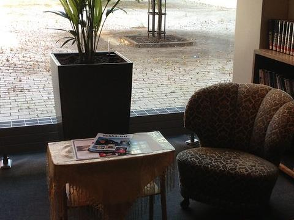
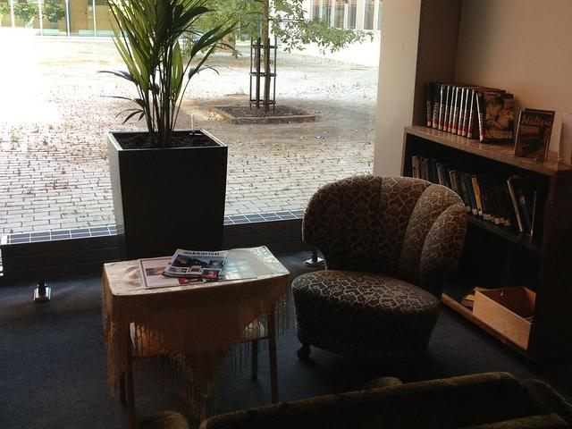
tags:
reason: Candidate B tightens the frame, eliminating distracting foreground elements (e.g., partial sofa at bottom) and reducing empty floor space, resulting in stronger visual balance and focus on the core subject: the armchair, table with magazines, potted plant, and bookshelf. The tighter crop enhances intimacy and compositional harmony without losing any essential content—key objects remain fully visible and contextually intact. Lighting and perspective are preserved naturally; no artifacts introduced. Candidate A’s wider framing includes extraneous lower foreground that dilutes the focal point and weakens the composition.
notes: FCDB ranking pair. photo_id=2199328642, pair_index=6, source_votes=0, edit_votes=5. source=crop_0, edit=crop_1, preference_strength=strong.


tags:
reason: Candidate B improves composition by tightening the frame to eliminate excessive foreground clutter (e.g., the lower edge of the green sofa), enhancing visual focus on the key elements: the potted plant, armchair, and bookshelf. The crop better balances negative space and subject weight, with stronger leading lines from the window and floor tiles guiding the eye. Lighting is more evenly distributed, reducing shadow dominance in the foreground. All critical content (plant, chair, table, books, window view) remains fully visible, and perspective feels more intentional and less accidental. Minor naturalness deduction only due to slightly higher contrast near the window, but overall more polished and professional.
notes: FCDB ranking pair. photo_id=2199328642, pair_index=8, source_votes=1, edit_votes=4. source=crop_0, edit=crop_1, preference_strength=strong.


tags:
reason: Candidate B provides a stronger compositional focus on the soldier as the primary subject, with clear visual storytelling: his gesture toward the doorway creates leading lines and narrative tension. The framing is tighter yet balanced, eliminating distracting empty space (e.g., the partial statue arm in A) and placing the subject off-center per rule of thirds. The man in the doorway is still visible but secondary, preserving scene context without competing for attention. Lighting and texture are consistent and natural; no artifacts. Candidate A overemphasizes the stone wall and includes a cropped, ambiguous statue arm that dilutes the subject and introduces visual confusion. B better captures the semantic intent—military engagement at a threshold—while maintaining high image quality.
notes: FCDB ranking pair. photo_id=4301604363, pair_index=1, source_votes=0, edit_votes=5. source=crop_0, edit=crop_1, preference_strength=strong.


tags:
reason: Candidate B improves composition by tightening the frame slightly, reducing excessive empty water space in the upper portion while preserving all key elements: the foreground pebble bed, the flowing river, and the midground gravel bar with driftwood. The tighter crop enhances visual focus on the textural contrast between rocks and water, and better balances the negative space. Both images retain full content coverage and natural lighting/texture, but B demonstrates more deliberate framing with stronger leading lines from the foreground stones into the river flow.
notes: FCDB ranking pair. photo_id=3886467178, pair_index=1, source_votes=0, edit_votes=5. source=crop_0, edit=crop_1, preference_strength=strong.


tags:
reason: Candidate B improves composition by including a prominent fallen log and branch on the left bank, which adds visual interest, depth, and a strong leading line toward the river’s flow. This element is cropped out in Candidate A, resulting in a less dynamic foreground. Both images retain full coverage of the main subject (river, rocky banks, autumn trees, distant bridge), but B better balances the frame with asymmetrical yet harmonious elements. Lighting, texture, and perspective are equally natural in both; however, B’s inclusion of the log enhances narrative and compositional strength without introducing artifacts.
notes: FCDB ranking pair. photo_id=3886467178, pair_index=8, source_votes=1, edit_votes=4. source=crop_0, edit=crop_1, preference_strength=strong.


tags:
reason: Candidate B improves composition by emphasizing the foreground pebble bank with stronger leading lines toward the river and bridge, creating greater depth and visual interest. The tighter framing reduces excessive empty sky and balances the weight of the scene better than Candidate A, which feels slightly top-heavy and less focused. Both preserve all key content (river, rocks, trees, bridge), but B enhances visual hierarchy and natural flow without artifacts or distortion.
notes: FCDB ranking pair. photo_id=3886467178, pair_index=9, source_votes=0, edit_votes=5. source=crop_1, edit=crop_0, preference_strength=strong.


tags:
reason: Candidate B improves composition by centering the architectural subject more symmetrically and removing the distracting vertical blur/obstruction on the left edge present in A. The framing better balances the geometric lines of the building, enhances visual focus on the people and structure, and maintains full coverage of the main subject and scene semantics. Lighting and texture remain natural; the slight crop adjustment does not omit critical content but tightens the frame for stronger visual impact.
notes: FCDB ranking pair. photo_id=4973476179, pair_index=0, source_votes=0, edit_votes=5. source=crop_1, edit=crop_0, preference_strength=strong.
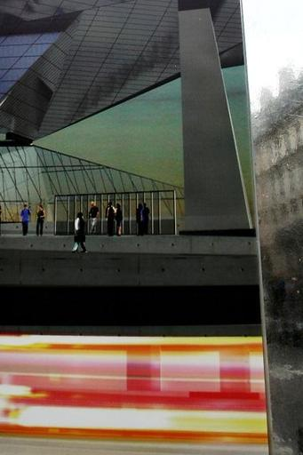

tags: distortion, edge_clipping
reason: Candidate B improves composition by centering the architectural subject and reducing distracting peripheral reflections on the left, yielding stronger visual balance and focus. It retains all key content: the modern building, people on the platform, and the motion-blur light streak at bottom. Candidate A includes excessive, blurry street-side reflection that competes for attention and weakens the subject hierarchy. While both show slight distortion from the reflective surface, B’s tighter framing minimizes edge artifacts and enhances clarity of the main scene. The slight loss of marginal context in B is acceptable given the compositional gain.
notes: FCDB ranking pair. photo_id=4973476179, pair_index=2, source_votes=1, edit_votes=4. source=crop_0, edit=crop_1, preference_strength=strong.

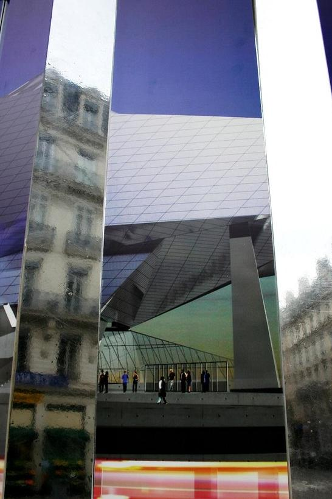
tags: distortion, clutter
reason: Candidate B provides a tighter, more intentional framing that centers the architectural subject and human figures, eliminating distracting vertical reflections on the left (present in A) that fragment the composition. The crop enhances visual balance and directs focus to the interplay between modern architecture and people. While both retain core content, B better isolates the meaningful scene—reducing visual noise from peripheral reflections—and improves clarity of perspective. The motion blur at bottom is present in both, but A’s left-side reflection introduces unnatural distortion and visual clutter, weakening compositional coherence.
notes: FCDB ranking pair. photo_id=4973476179, pair_index=3, source_votes=1, edit_votes=4. source=crop_0, edit=crop_1, preference_strength=strong.


tags:
reason: Candidate B improves composition by including the blue lake on the right, which adds color contrast, depth, and visual balance to the scene. The snow-capped peaks are more fully captured with better sky framing (including a prominent cloud formation), enhancing grandeur and scale. The campsite remains fully visible, preserving all key content. Lighting and texture are consistent and natural; the only minor drawback is slightly reduced foreground detail due to wider framing, but this is outweighed by stronger compositional harmony and environmental context.
notes: FCDB ranking pair. photo_id=8715261793, pair_index=4, source_votes=1, edit_votes=4. source=crop_1, edit=crop_0, preference_strength=strong.


tags:
reason: Candidate B tightens the framing slightly, reducing excessive foreground empty space and bringing the campsite and lake into better visual balance with the mountain backdrop. The subject (campsite) remains fully visible, and the tighter crop enhances compositional focus without sacrificing key elements. Lighting and perspective are consistent and natural in both, but B’s improved ratio of subject to environment yields stronger visual hierarchy and reduced distraction from the lower-left rocky foreground.
notes: FCDB ranking pair. photo_id=8715261793, pair_index=5, source_votes=1, edit_votes=4. source=crop_0, edit=crop_1, preference_strength=strong.


tags: A: excessive top empty space, A: weaker subject framing
reason: Candidate B improves composition by tightening the frame, eliminating excessive empty pavement at the top, and better centering the sign and subjects. The balcony railing on the right adds depth and context without obstructing key elements. Both preserve the main subjects (two people, sign, food display), but B enhances visual balance and focus. Lighting and texture are natural in both, but B’s tighter crop yields stronger narrative and aesthetic cohesion.
notes: FCDB ranking pair. photo_id=16569865263, pair_index=0, source_votes=1, edit_votes=4. source=crop_0, edit=crop_1, preference_strength=strong.


tags:
reason: Candidate B improves composition by including more context: additional pedestrians in the upper left enhance scene depth and narrative, while maintaining clear focus on the two main subjects and the sign. The framing feels more balanced with better use of negative space and leading lines from the cobblestone pattern. Content coverage is superior—no critical elements are cropped out, and the added figures reinforce the street-life atmosphere without distraction. Lighting and perspective remain natural and consistent; no artifacts introduced. Candidate A crops too tightly, losing environmental storytelling and slightly unbalancing the frame.
notes: FCDB ranking pair. photo_id=16569865263, pair_index=4, source_votes=1, edit_votes=4. source=crop_0, edit=crop_1, preference_strength=strong.


tags:
reason: Candidate B improves composition by tightening the frame slightly, reducing excessive empty space at the bottom and better centering the visual flow along the alley. The main subjects (two walking people and the sign) remain fully visible and more dynamically placed within the diagonal leading lines of the cobblestone path. Lighting and perspective are consistent and natural in both, but B’s tighter crop enhances focus without sacrificing any key content—e.g., all pedestrians, signage, architectural details, and scene context are preserved. The slight upward shift in B also avoids the distracting manhole cover dominating the lower third in A, yielding a more balanced and visually engaging composition.
notes: FCDB ranking pair. photo_id=16569865263, pair_index=8, source_votes=1, edit_votes=4. source=crop_0, edit=crop_1, preference_strength=strong.

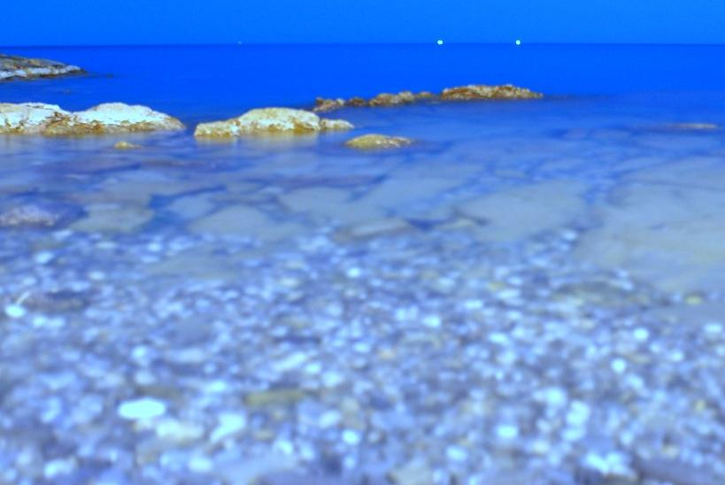
tags:
reason: Candidate B improves composition by tightening the frame to emphasize the midground rocks and water texture, reducing excessive empty sky (which dominates A) and enhancing visual balance. The horizon is better placed near the upper third, aligning with rule-of-thirds principles. Both preserve the key subject (shallow coastal scene with rocks and pebbles), but B avoids the overly wide, top-heavy framing of A. Lighting and color remain consistent; slight softness in foreground is present in both, but B’s tighter crop minimizes distraction from the shallow depth-of-field blur.
notes: FCDB ranking pair. photo_id=4458394677, pair_index=3, source_votes=0, edit_votes=5. source=crop_0, edit=crop_1, preference_strength=strong.


tags: foreground_blur_excessive
reason: Candidate A provides a more balanced composition with clear horizon placement, meaningful foreground rocks, and sufficient depth. The sky occupies ~1/3 of the frame, adhering to classic landscape proportions. Candidate B crops too tightly, eliminating the horizon and sky, which weakens spatial context and visual balance. While both have similar foreground blur (likely intentional long exposure), Candidate A retains critical scene semantics—the sea-sky boundary and distant lights—enhancing narrative and scale. Candidate B’s extreme close-up reduces content coverage and feels less intentional, bordering on accidental crop. Visual naturalness is slightly better in A due to preserved lighting continuity and perspective.
notes: FCDB ranking pair. photo_id=4458394677, pair_index=5, source_votes=1, edit_votes=4. source=crop_1, edit=crop_0, preference_strength=strong.


tags:
reason: Candidate B improves composition by centering the rock formation more symmetrically and providing a more balanced horizon line. The foreground pebbles remain visible but are less dominant, allowing better visual flow toward the midground rocks and distant lights. The crop avoids excessive empty space in the lower frame (as in A) while preserving all key elements: shoreline rocks, clear water, seabed texture, and distant lights. Lighting and color fidelity are consistent, with slightly better focus and reduced blur in the midground compared to A, enhancing realism.
notes: FCDB ranking pair. photo_id=4458394677, pair_index=8, source_votes=1, edit_votes=4. source=crop_0, edit=crop_1, preference_strength=strong.


tags:
reason: Candidate B improves composition by including more of the yellow-painted lower wall, which balances the visual weight of the upper brick texture and the figure on the right. The added bottom margin creates a more stable base and avoids cutting off the scene abruptly, enhancing framing without losing any key content (peace sign, heart, plus, figure remain fully visible). Lighting and texture are consistent; the slight increase in context improves spatial coherence and narrative completeness.
notes: FCDB ranking pair. photo_id=5120859921, pair_index=0, source_votes=1, edit_votes=4. source=crop_1, edit=crop_0, preference_strength=strong.


tags:
reason: Candidate B provides a tighter, more balanced framing that centers the pillow and stool symmetrically, reducing distracting empty space on the left (present in A) while preserving all key content. The crop enhances visual focus on the subject without cutting off any important elements. Lighting, texture, and perspective remain natural and consistent between both, but B’s composition is more deliberate and aesthetically resolved.
notes: FCDB ranking pair. photo_id=10769837753, pair_index=5, source_votes=0, edit_votes=5. source=crop_0, edit=crop_1, preference_strength=strong.


tags:
reason: Candidate B provides a more balanced and centered framing of the pillow and stool, with symmetrical placement and improved vertical cropping that avoids cutting off the top edge of the pillow (as in A). The stool legs are fully visible and evenly framed, enhancing stability and visual harmony. Lighting and texture remain consistent and natural in both, but B’s tighter, more intentional crop eliminates excess floor space without sacrificing context, resulting in stronger compositional focus and elegance.
notes: FCDB ranking pair. photo_id=10769837753, pair_index=6, source_votes=1, edit_votes=4. source=crop_0, edit=crop_1, preference_strength=strong.


tags:
reason: Candidate B improves composition by shifting the frame slightly right and down, better centering the dual-lens module within the textured surface and reducing excessive empty space on the left. The subject remains fully visible with identical detail and focus, preserving all critical content. Lighting and texture rendering are consistent, but the tighter, more balanced framing in B enhances visual cohesion and directs attention more effectively to the main subject without cropping or distortion.
notes: FCDB ranking pair. photo_id=1488603583, pair_index=5, source_votes=1, edit_votes=4. source=crop_0, edit=crop_1, preference_strength=strong.
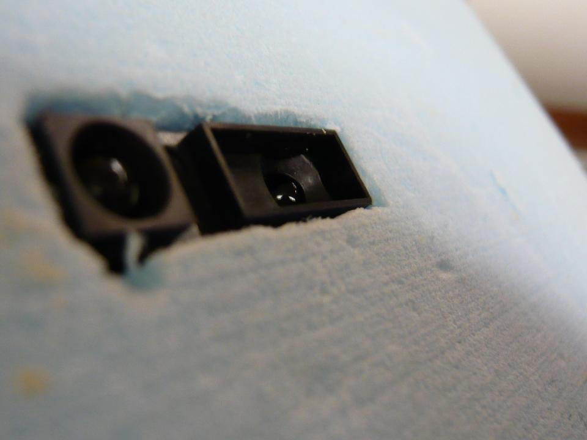

tags:
reason: Candidate B offers a slightly tighter, more centered framing of the dual-camera module embedded in the textured surface, improving visual balance and focus. The subject remains fully visible with no loss of critical detail, and the shallow depth of field is preserved naturally. The lighting and texture rendering are consistent and realistic in both, but B’s composition reduces distracting empty space in the lower-left and better aligns the subject with the diagonal flow of the surface texture, enhancing visual cohesion.
notes: FCDB ranking pair. photo_id=1488603583, pair_index=9, source_votes=1, edit_votes=4. source=crop_1, edit=crop_0, preference_strength=strong.


tags: low_light_noise, underexposure
reason: Candidate B provides a more balanced framing with the cityscape centered horizontally and slightly lower in the frame, allowing more of the illuminated skyline to be visible while preserving the dark sky above for negative space. The horizon line is cleaner and less cluttered than in A, where the bottom edge cuts off some lights awkwardly. Candidate B includes more of the key illuminated structures (e.g., the red-lit tower is more clearly positioned and visible), improving content coverage. Both suffer from low-light noise and underexposure, but B’s composition better guides the eye toward the main subject—the city lights—without excessive empty black space dominating the upper half as in A. Thus, B has superior compositional structure and subject emphasis.
notes: FCDB ranking pair. photo_id=2545039943, pair_index=0, source_votes=0, edit_votes=5. source=crop_0, edit=crop_1, preference_strength=strong.


tags:
reason: Candidate B provides a tighter, more balanced framing of the cityscape at night, with improved horizontal alignment and better distribution of light clusters across the frame. The horizon sits near the lower third, adhering to rule-of-thirds principles, and the dark upper space is proportionally more intentional. Candidate A has excessive empty black space above and slightly misaligned horizon, weakening visual focus. Both preserve all key content (city lights, skyline silhouette), but B enhances compositional strength without sacrificing detail or introducing artifacts.
notes: FCDB ranking pair. photo_id=2545039943, pair_index=1, source_votes=1, edit_votes=4. source=crop_0, edit=crop_1, preference_strength=strong.


tags: underexposure, noise
reason: Candidate B provides a tighter, more balanced framing of the cityscape at night, placing the illuminated horizon closer to the lower third for stronger compositional structure. It retains all key elements (city lights, red beacon, terrain silhouette) while reducing excessive empty black space above, which dominates Candidate A and weakens visual focus. Both suffer from low-light noise and underexposure, but B’s crop improves subject emphasis without sacrificing content. The slightly higher contrast in B enhances perceived clarity despite similar technical limitations.
notes: FCDB ranking pair. photo_id=2545039943, pair_index=3, source_votes=1, edit_votes=4. source=crop_0, edit=crop_1, preference_strength=strong.


tags: low_light_noise, slight_overcrop_A
reason: Candidate B provides a more balanced composition with better horizontal framing of the cityscape, preserving more of the illuminated horizon and reducing excessive empty black space at the top compared to Candidate A. Both retain the main subject (night city lights), but B includes slightly more contextual detail on the right side and avoids cutting off the lower edge of the lit area as severely as A does. Visual naturalness is modest due to low-light noise inherent in both, but B’s framing feels more intentional and less truncated. Compositionally, B achieves stronger visual weight distribution and horizon placement.
notes: FCDB ranking pair. photo_id=2545039943, pair_index=4, source_votes=1, edit_votes=4. source=crop_0, edit=crop_1, preference_strength=strong.


tags: low_light_noise, slight_overdarkening
reason: Candidate A provides a more balanced composition with the cityscape positioned in the lower third, adhering to the rule of thirds and leaving meaningful negative space above. It captures more of the illuminated skyline, including identifiable structures and light patterns, improving content coverage. Candidate B crops tighter on the lower edge, losing some context and visual interest, and appears slightly darker with less visible detail in the city lights. While both suffer from low-light limitations, A retains better spatial context and compositional harmony.
notes: FCDB ranking pair. photo_id=2545039943, pair_index=5, source_votes=1, edit_votes=4. source=crop_0, edit=crop_1, preference_strength=strong.


tags:
reason: Candidate B provides a more balanced and intentional framing: the cityscape occupies the lower third, adhering to the rule of thirds, with more visible detail in buildings and lights. The horizon is clearer and more horizontally aligned, improving visual stability. Candidate A crops too tightly on the bottom, cutting off part of the illuminated skyline and leaving excessive empty black space above, weakening compositional strength. Both images suffer from low light noise, but B retains more usable content and spatial context without introducing artifacts.
notes: FCDB ranking pair. photo_id=2545039943, pair_index=6, source_votes=1, edit_votes=4. source=crop_0, edit=crop_1, preference_strength=strong.


tags: low_light_noise, slight_overcrop_A
reason: Candidate B provides a more balanced composition with the cityscape positioned lower in the frame, allowing more atmospheric negative space above while still retaining full visibility of the illuminated skyline. Candidate A crops too tightly on the lower third, cutting off some peripheral lights and reducing visual breathing room. Both preserve the main subject (city at night), but B better respects the rule of thirds and avoids an overly top-heavy dark void. Slight noise and low-light limitations affect both, but B’s framing feels more intentional and aesthetically resolved.
notes: FCDB ranking pair. photo_id=2545039943, pair_index=7, source_votes=1, edit_votes=4. source=crop_1, edit=crop_0, preference_strength=strong.


tags: excessive_darkness, low_contrast
reason: Candidate A includes more of the cityscape at the bottom, providing better context and visual grounding. The lights are slightly more visible and distributed, offering a clearer sense of place and scale. Candidate B crops tighter on the dark sky, losing valuable lower-frame content without improving focus or balance; the central dark artifact is present in both but more dominant in B due to reduced contextual framing. While both suffer from low light and noise, A preserves more meaningful content and achieves marginally better compositional balance by allocating ~1/3 of frame to the illuminated horizon.
notes: FCDB ranking pair. photo_id=2545039943, pair_index=9, source_votes=1, edit_votes=4. source=crop_0, edit=crop_1, preference_strength=strong.


tags:
reason: Candidate A includes both full figures of the two people, preserving their posture, relative positioning, and interaction—critical for scene semantics. The framing balances the subjects on the left with negative space on the right, creating visual rhythm and depth. Candidate B crops out the lower legs and feet of both figures, weakening grounding and spatial context; the tighter crop also reduces compositional breathing room and diminishes the reflective floor’s contribution to symmetry and mood. Both images share similar texture and lighting, but A better maintains subject integrity and compositional harmony.
notes: FCDB ranking pair. photo_id=16025151662, pair_index=4, source_votes=1, edit_votes=4. source=crop_0, edit=crop_1, preference_strength=strong.


tags: cropped_subjects
reason: Candidate B improves composition by reducing excessive empty space at the bottom and tightening the frame around the subjects’ lower bodies and reflections, enhancing visual balance and focus. The stronger horizontal lines of the tiled wall and floor are more evenly distributed, creating a more deliberate, graphic rhythm. While both crops omit upper bodies (limiting full subject identity), Candidate B retains sufficient contextual detail—shoes, stance, reflection—to preserve scene semantics without unnecessary distraction. The texture and lighting remain consistent and natural in both, but B’s tighter framing avoids the slightly awkward negative space dominance in A, resulting in a more intentional, gallery-ready composition.
notes: FCDB ranking pair. photo_id=16025151662, pair_index=7, source_votes=1, edit_votes=4. source=crop_1, edit=crop_0, preference_strength=strong.


tags:
reason: Candidate B improves composition by centering the two figures more symmetrically and reducing excessive empty space on the right, enhancing visual balance. The crop tightens the frame without cutting off any essential subject elements—both figures remain fully visible with full legs and feet intact. Lighting and texture are preserved with equal fidelity, but B’s tighter framing strengthens focus on the subjects and their interaction. The reflection on the floor is more cohesively integrated, and the horizon line aligns better with compositional thirds. Candidate A’s wider right margin feels unintentional and dilutes the subject emphasis.
notes: FCDB ranking pair. photo_id=16025151662, pair_index=8, source_votes=0, edit_votes=5. source=crop_0, edit=crop_1, preference_strength=strong.


tags:
reason: Candidate B improves composition by tightening the frame, reducing distracting empty space on the right (where a yellow vehicle dominates in A), and better centering the key subjects (surfers with boards) and the SUV. The stronger leading lines from the road converge more effectively toward the horizon/sun, enhancing depth. Both images retain full content coverage of main subjects and scene context, but B’s tighter crop eliminates visual clutter without sacrificing semantics. Lighting and lens flare are consistent, but B’s reduced peripheral distraction yields higher visual coherence and natural focus.
notes: FCDB ranking pair. photo_id=15137530922, pair_index=1, source_votes=1, edit_votes=4. source=crop_0, edit=crop_1, preference_strength=strong.


tags:
reason: Candidate B improves composition by tightening the crop slightly, reducing excessive empty sky and road space while preserving all key subjects (surfers with boards, SUV, background figures, flags). The framing better centers the group and enhances visual balance. Lighting and lens flare are consistent between both, but B’s tighter framing increases subject prominence without cutting off any critical content. The slight reduction in peripheral distractions (e.g., edge of yellow vehicle on far right) improves focus. Both maintain high visual naturalness, but B demonstrates more deliberate compositional control.
notes: FCDB ranking pair. photo_id=15137530922, pair_index=5, source_votes=1, edit_votes=4. source=crop_0, edit=crop_1, preference_strength=strong.


tags:
reason: Candidate B improves composition by reducing excessive foreground shadow and darkening in the lower-left, which in Candidate A distracts from the subjects and creates visual imbalance. The wider top margin in B better accommodates the bright sunburst and sky, enhancing the sense of open space and golden-hour atmosphere without cropping any key elements. Both images retain full coverage of the surfers, cars, and background context, but B’s framing feels more intentional and balanced—subject silhouettes are clearer against the luminous horizon, and the road leading line remains effective. Slight vignetting and color grading are consistent and natural in both, but B avoids the overly heavy purple cast in the lower third of A, improving visual coherence.
notes: FCDB ranking pair. photo_id=15137530922, pair_index=7, source_votes=1, edit_votes=4. source=crop_0, edit=crop_1, preference_strength=strong.


tags:
reason: Candidate B provides a more balanced and horizontally expansive framing that better captures the full length of the houseboat, including its open veranda on the left and the full roofline. The two palm trees are symmetrically positioned above the structure, enhancing visual harmony. Candidate A crops tighter on the right, cutting off part of the boat’s front and reducing contextual depth; it also places the left palm tree too close to the edge, creating imbalance. Both preserve key content (boat, palms, water), but B’s composition improves subject placement, negative space distribution, and narrative completeness without artifacts or distortion.
notes: FCDB ranking pair. photo_id=5123207448, pair_index=0, source_votes=4, edit_votes=1. source=crop_1, edit=crop_0, preference_strength=strong.


tags:
reason: Candidate B improves composition by centering the houseboat more symmetrically and including both palm trees fully within the frame, enhancing balance and visual harmony. The crop avoids cutting off the left edge of the boat (as in A), preserving full subject integrity. Lighting, texture, and perspective remain natural and consistent between both, but B’s framing yields stronger visual focus and proportional negative space above and below the subject.
notes: FCDB ranking pair. photo_id=5123207448, pair_index=1, source_votes=5, edit_votes=0. source=crop_1, edit=crop_0, preference_strength=strong.


tags:
reason: Candidate B provides a cleaner, more balanced composition by removing the partially visible adjacent house on the left (present in A), which distracts from the main subject—the traditional houseboat. The framing in B centers the boat symmetrically, with palm trees evenly spaced above, enhancing visual harmony and focus. Both images retain full coverage of the houseboat’s key features (roof, windows, tires, structure), but B avoids the cluttered edge and improves negative space usage. Lighting, texture, and perspective are equally natural in both; however, B’s tighter, intentional crop elevates compositional strength without sacrificing content.
notes: FCDB ranking pair. photo_id=5123207448, pair_index=2, source_votes=5, edit_votes=0. source=crop_1, edit=crop_0, preference_strength=strong.
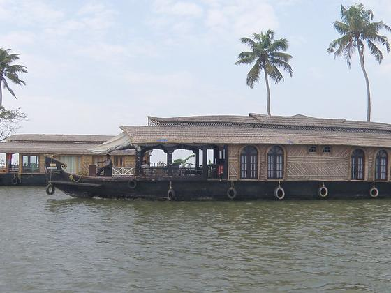
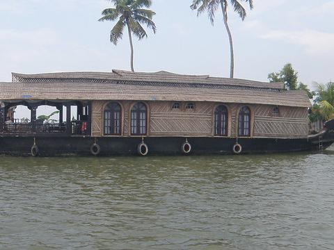
tags: cropping_artifact
reason: Candidate B provides a cleaner, more balanced composition by removing the partially visible adjacent structure on the left (present in A), which distracts from the main subject—the houseboat. The framing in B centers the boat symmetrically, with palm trees evenly distributed above, enhancing visual harmony and focus. Both images retain full coverage of the main subject and key scene elements (water, sky, palms, boat details). Candidate A’s left-side crop introduces an incomplete secondary structure that weakens compositional integrity and creates visual imbalance. Lighting and texture are consistent and natural in both, though A’s edge cropping slightly compromises realism due to the abrupt cut-off.
notes: FCDB ranking pair. photo_id=5123207448, pair_index=5, source_votes=5, edit_votes=0. source=crop_1, edit=crop_0, preference_strength=strong.


tags:
reason: Candidate B improves composition by including more of the left-side palm tree and balancing the right-side palms, creating a more symmetrical and visually harmonious frame. The boat remains fully visible with no critical content loss, and the wider framing enhances environmental context without introducing artifacts. Lighting and perspective are consistent and natural in both, but B’s inclusion of additional contextual elements (full palm fronds, clearer horizon line) strengthens visual storytelling and spatial depth.
notes: FCDB ranking pair. photo_id=5123207448, pair_index=7, source_votes=5, edit_votes=0. source=crop_1, edit=crop_0, preference_strength=strong.


tags:
reason: Candidate B improves composition by centering the bench and subjects more symmetrically, using the tree as a natural framing element without excessive negative space. It includes all three people clearly (vs. only two in A), enhancing narrative completeness. The wider horizontal crop preserves the full bench and foreground paving, improving scene context and balance. Lighting and perspective remain consistent and natural in both, but B’s framing better adheres to rule-of-thirds principles and avoids cutting off the right-side person present in the original scene.
notes: FCDB ranking pair. photo_id=15961409258, pair_index=4, source_votes=5, edit_votes=0. source=crop_1, edit=crop_0, preference_strength=strong.


tags:
reason: Candidate B improves composition by centering the bench and subjects more symmetrically, using the trees as natural framing elements that guide the eye toward the central figures without cutting off key elements. The wider horizontal crop includes both side trees fully, enhancing balance and depth, while preserving all critical content (three people, bench, water, horizon). Lighting and perspective remain consistent and natural; no artifacts introduced. Candidate A crops too tightly on the left, truncating the left tree and creating visual imbalance, slightly weakening the framing.
notes: FCDB ranking pair. photo_id=15961409258, pair_index=5, source_votes=4, edit_votes=1. source=crop_0, edit=crop_1, preference_strength=strong.


tags:
reason: Candidate B improves composition by better framing the tree canopy above the bench, creating a more balanced and natural vignette that draws focus to the subjects without cutting off key elements. The wider top margin enhances vertical balance and avoids the slightly cramped feel of Candidate A. Both preserve full subject visibility and scene context, but B’s framing feels more intentional and harmonious with the environment—stronger leading lines from branches, improved negative space above, and more even distribution of visual weight. Lighting and texture remain consistent and natural in both, but B’s crop better respects the original scene’s spatial rhythm.
notes: FCDB ranking pair. photo_id=15961409258, pair_index=7, source_votes=5, edit_votes=0. source=crop_0, edit=crop_1, preference_strength=strong.


tags:
reason: Candidate B offers a slightly tighter, more centered framing that better emphasizes the mantis’s head and forelimbs—the primary focal point—while maintaining full visibility of all key anatomical features. The subject is more balanced within the frame, with improved negative space distribution (less empty area to the left) and stronger visual alignment along the diagonal axis of the mantis’s posture. Lighting and texture fidelity are identical between both, but B’s crop enhances compositional dynamism without sacrificing any content or introducing artifacts.
notes: FCDB ranking pair. photo_id=10944401125, pair_index=1, source_votes=5, edit_votes=0. source=crop_1, edit=crop_0, preference_strength=strong.


tags:
reason: Candidate A provides a tighter, more balanced framing that centers the mantis while preserving full visibility of its body, legs, and antennae. The subject occupies an optimal portion of the frame with better negative space distribution—neither too cramped nor overly sparse. Candidate B crops slightly tighter on the right but cuts off part of the left foreleg and reduces contextual ground texture, slightly diminishing compositional harmony. Both images maintain high visual naturalness and content coverage, but A’s framing enhances focus and aesthetic balance without sacrificing detail.
notes: FCDB ranking pair. photo_id=10944401125, pair_index=5, source_votes=5, edit_votes=0. source=crop_1, edit=crop_0, preference_strength=strong.


tags:
reason: Candidate B provides a slightly tighter, more centered framing that enhances visual focus on the mantis while preserving full subject integrity. The mantis is better balanced within the frame, with more even negative space around it and improved alignment of its body axis relative to the image plane. Lighting and texture are consistent between both, but B avoids slight edge cropping of the forelegs and antennae present in A, yielding marginally superior composition without sacrificing any content or introducing artifacts.
notes: FCDB ranking pair. photo_id=10944401125, pair_index=9, source_votes=5, edit_votes=0. source=crop_1, edit=crop_0, preference_strength=strong.


tags:
reason: Candidate B improves composition by tightening the frame slightly, reducing excessive empty sky and pavement while keeping all key subjects fully visible. The bus shelter signage (e.g., '放置バイクは取締') is now legible, adding contextual detail without clutter. The two central figures remain well-framed with better vertical balance, and the background building retains full architectural context. Lighting and perspective are consistent and natural in both, but B’s tighter crop enhances visual focus and narrative clarity without sacrificing content.
notes: FCDB ranking pair. photo_id=3579364195, pair_index=5, source_votes=4, edit_votes=1. source=crop_1, edit=crop_0, preference_strength=strong.


tags:
reason: Candidate B improves composition by including more of the subject’s arms and lower torso, enhancing the sense of movement and engagement with the rock formation. The framing better balances the negative space on the right while maintaining strong visual focus on the person entering the crevice. Both images preserve full identity and scene semantics, but B offers a more dynamic and complete depiction of the action without artifacts or distortion. Lighting and texture remain natural in both, though B’s slightly wider crop enhances spatial context.
notes: FCDB ranking pair. photo_id=5755997394, pair_index=0, source_votes=5, edit_votes=0. source=crop_1, edit=crop_0, preference_strength=strong.


tags:
reason: Candidate B improves composition by centering the subject more effectively and using the converging rock lines to create stronger leading lines toward the figure and cave entrance. The tighter crop eliminates excessive empty space in the upper left (present in A) without sacrificing any key content—the person, cap, tank top, and rock textures remain fully visible. Lighting and perspective are consistent and natural in both, but B’s framing enhances visual focus and narrative tension (exploration into darkness). Content coverage is identical and complete; no important elements are lost.
notes: FCDB ranking pair. photo_id=5755997394, pair_index=1, source_votes=5, edit_votes=0. source=crop_1, edit=crop_0, preference_strength=strong.


tags:
reason: Candidate B improves composition by tighter framing that emphasizes the subject’s interaction with the rock formation, eliminating distracting lower foreground rocks and reducing empty space. The subject remains fully visible (head, shoulders, arms), preserving identity and context. The crop enhances visual focus on the narrow passage and creates stronger leading lines from the rock edges toward the subject’s back and cap. Lighting and texture are consistent and natural in both, but B’s tighter frame yields higher visual impact without sacrificing content or introducing artifacts.
notes: FCDB ranking pair. photo_id=5755997394, pair_index=2, source_votes=4, edit_votes=1. source=crop_1, edit=crop_0, preference_strength=strong.


tags:
reason: Candidate A provides a more balanced and dynamic composition: the subject is centered with clear negative space above and to the sides, emphasizing scale and depth of the rock formation. The full upper body and arms are visible, conveying motion and intent (e.g., entering the crevice), enhancing narrative. Candidate B crops too tightly on the upper torso and head, losing arm gesture and reducing spatial context; the framing feels cramped and less intentional. Both images maintain good natural lighting and texture fidelity, but A better preserves scene semantics and visual flow.
notes: FCDB ranking pair. photo_id=5755997394, pair_index=4, source_votes=5, edit_votes=0. source=crop_1, edit=crop_0, preference_strength=strong.


tags: excess_empty_space
reason: Candidate B tightens the framing, eliminating distracting foreground rocks and foliage at the bottom left (present in A), which improves visual focus on the subject entering the cave. The tighter crop enhances compositional balance by reducing dead space and aligning the subject more centrally within the rock archway. Both images retain the key subject (person in tank top and cap) and scene semantics (rock formation/cave entrance), but B’s cleaner framing strengthens the narrative and depth. Lighting and texture remain natural and consistent; no artifacts introduced. Candidate A includes extraneous lower rocks that dilute the focal point and weaken the leading lines toward the cave.
notes: FCDB ranking pair. photo_id=5755997394, pair_index=6, source_votes=4, edit_votes=1. source=crop_1, edit=crop_0, preference_strength=strong.


tags:
reason: Candidate A includes the subject’s full torso and arms, enhancing narrative context (e.g., posture, gesture, gear on ground), while maintaining strong compositional balance with the rock overhang framing the figure. Candidate B crops tighter, cutting off the lower body and eliminating contextual elements (e.g., backpack/helmet on ground), reducing storytelling depth without improving focus or aesthetics. Both have natural lighting and texture, but A better preserves scene semantics and visual completeness.
notes: FCDB ranking pair. photo_id=5755997394, pair_index=7, source_votes=4, edit_votes=1. source=crop_0, edit=crop_1, preference_strength=strong.


tags:
reason: Candidate B improves composition by including more of the subject’s lower body and foreground context (rocks, gear), enhancing spatial grounding and narrative. The wider framing better balances the large rock masses and avoids cutting off the subject’s arms and legs, which in Candidate A creates an awkward truncation. Lighting and texture remain natural and consistent; no artifacts introduced. The added context (e.g., visible gloves, partial gear) strengthens scene semantics without distracting from the central subject entering the crevice.
notes: FCDB ranking pair. photo_id=5755997394, pair_index=9, source_votes=4, edit_votes=1. source=crop_1, edit=crop_0, preference_strength=strong.


tags:
reason: Candidate B provides a more balanced and centered framing of the rower, with improved horizontal symmetry and better use of negative space. The subject is positioned slightly above the lower third, aligning with rule-of-thirds principles, while the glittering water leads the eye naturally toward the figure. Candidate A crops too tightly on the left, cutting off part of the water’s reflective pattern and creating an unbalanced composition. Both preserve full subject identity and scene semantics, but B enhances visual rhythm and depth through more deliberate spacing and perspective.
notes: FCDB ranking pair. photo_id=8062088404, pair_index=0, source_votes=4, edit_votes=1. source=crop_1, edit=crop_0, preference_strength=strong.


tags:
reason: Candidate B provides a more balanced and intentional composition: the rower is centered horizontally and placed along the lower third, adhering to rule-of-thirds principles. The expanded vertical framing includes more of the shimmering water foreground and background context (bank on right), enhancing depth and environmental storytelling without cutting off essential elements. The lighting and specular highlights are preserved identically, but B avoids the slight top-cropping of A that truncates the upper edge of the scene and reduces breathing room. Both retain full subject identity and key visual elements, but B’s framing feels more deliberate and aesthetically resolved.
notes: FCDB ranking pair. photo_id=8062088404, pair_index=1, source_votes=5, edit_votes=0. source=crop_0, edit=crop_1, preference_strength=strong.


tags:
reason: Candidate B provides a more balanced and intentional composition: the rower is centered horizontally, with stronger negative space on the right that enhances visual flow and directionality. The background includes a subtle bridge silhouette that adds depth and context without distraction. The water’s glittering highlights are preserved while avoiding excessive overexposure in the upper left (as in A), resulting in better tonal control and richer shadow detail. Both images retain full subject identity and scene semantics, but B’s framing feels more deliberate and aesthetically resolved.
notes: FCDB ranking pair. photo_id=8062088404, pair_index=2, source_votes=4, edit_votes=1. source=crop_0, edit=crop_1, preference_strength=strong.


tags:
reason: Candidate B improves composition by tightening the frame around the rower, reducing excessive dark negative space on the left and right while preserving the full subject and key context (water, sparkle, bank). The rower is better centered horizontally and placed more effectively within the visual flow of light reflections. Both images retain identical content and natural lighting, but B’s tighter crop enhances focus and dynamism without cutting essential elements.
notes: FCDB ranking pair. photo_id=8062088404, pair_index=3, source_votes=4, edit_votes=1. source=crop_1, edit=crop_0, preference_strength=strong.


tags:
reason: Candidate B improves composition by centering the rower more effectively within the frame and balancing the glittering water reflections across the image. The tighter crop eliminates excessive dark negative space in the upper left (present in A), enhancing visual focus and dynamism without sacrificing any key subject or contextual detail. Both images retain full identity of the rower and scene semantics, but B’s framing better leverages the diagonal line of the oars and the shimmering light pattern for stronger leading lines and rhythm. Lighting and texture remain natural and consistent; no artifacts introduced.
notes: FCDB ranking pair. photo_id=8062088404, pair_index=5, source_votes=4, edit_votes=1. source=crop_1, edit=crop_0, preference_strength=strong.


tags:
reason: Candidate B improves composition by better balancing the armchair (right) with the potted plant (left), and includes more of the bookshelf on the right, enhancing scene context without crowding. The crop tightens the frame slightly, reducing empty floor space and strengthening visual focus on the interior vignette. Lighting and perspective remain natural; no artifacts introduced. Candidate A cuts off part of the bookshelf and leaves excessive negative space below the chair, weakening compositional harmony.
notes: FCDB ranking pair. photo_id=2199328642, pair_index=4, source_votes=4, edit_votes=1. source=crop_1, edit=crop_0, preference_strength=strong.


tags:
reason: Candidate B provides a more balanced and intentional composition: the subject is better centered horizontally, the doorway behind him adds depth and context without distraction, and the upper portion of the stone wall is included, improving environmental storytelling. The framing avoids cutting off the top of the helmet (as in A), preserving full subject identity. Lighting and texture remain consistent and natural in both, but B’s slightly wider crop enhances spatial context while maintaining tight focus on the soldier’s gesture and expression.
notes: FCDB ranking pair. photo_id=4301604363, pair_index=0, source_votes=4, edit_votes=1. source=crop_1, edit=crop_0, preference_strength=strong.


tags:
reason: Candidate B provides a stronger compositional focus on the soldier as the primary subject, with clear framing, balanced negative space, and dynamic leading lines from the arm toward the doorway. The subject is fully visible (face, uniform, gear), preserving identity and context. Lighting is even, textures are natural, and perspective feels authentic. Candidate A crops the soldier’s head and upper torso, obscuring identity and reducing narrative clarity; the man in the doorway becomes a competing focal point without sufficient context, weakening visual hierarchy. B better fulfills photographic principles of subject emphasis, balance, and storytelling.
notes: FCDB ranking pair. photo_id=4301604363, pair_index=1, source_votes=5, edit_votes=0. source=crop_1, edit=crop_0, preference_strength=strong.


tags:
reason: Candidate B improves composition by better balancing the frame: the soldier on the left and the civilian in the doorway on the right create stronger visual symmetry and narrative tension. The crop tightens the scene without cutting essential elements—both subjects remain fully visible, with clearer facial expressions and posture. The stone wall’s texture and lighting are preserved with higher apparent sharpness and contrast. Candidate A includes slightly more empty space on the left and crops the civilian’s lower body more aggressively, reducing contextual completeness. B maintains full subject identity and scene semantics while enhancing focus and balance.
notes: FCDB ranking pair. photo_id=4301604363, pair_index=7, source_votes=4, edit_votes=1. source=crop_0, edit=crop_1, preference_strength=strong.


tags:
reason: Candidate B improves composition by tightening the foreground pebble bed, enhancing texture and leading lines toward the river, while maintaining full coverage of the main subject (river and gravel bar). The slightly lower horizon creates better visual balance and emphasizes the tactile foreground. Lighting and perspective remain natural; no artifacts introduced. Candidate A includes more empty sky and distant bridge, diluting focus and weakening foreground impact.
notes: FCDB ranking pair. photo_id=3886467178, pair_index=7, source_votes=4, edit_votes=1. source=crop_0, edit=crop_1, preference_strength=strong.


tags:
reason: Candidate B offers a tighter, more vertically balanced composition that emphasizes the architectural reflection and symmetry. The crop removes distracting motion blur at the bottom (present in A), sharpening focus on the central subject: the group of people framed within the modern building’s reflection. The vertical alignment of the reflective pillar and the building’s geometry creates stronger leading lines and visual rhythm. While both preserve the core scene, B better isolates the meaningful interaction between old and new architecture and human scale, with cleaner negative space and reduced visual noise. Lighting and texture remain natural and consistent.
notes: FCDB ranking pair. photo_id=4973476179, pair_index=7, source_votes=5, edit_votes=0. source=crop_0, edit=crop_1, preference_strength=strong.


tags:
reason: Candidate B significantly improves composition by including the blue lake on the right, which adds color contrast, depth, and visual balance to the scene. The expanded sky with prominent clouds enhances the sense of scale and grandeur without sacrificing any key elements (the campsite, vehicles, and mountains remain fully visible). The framing feels more intentional and harmonious, with the diagonal slope leading the eye toward both the camp and the distant peaks. Lighting and texture are consistent and natural in both, but B’s inclusion of the lake elevates the image from a simple mountain camp to a complete alpine landscape narrative.
notes: FCDB ranking pair. photo_id=8715261793, pair_index=4, source_votes=4, edit_votes=1. source=crop_0, edit=crop_1, preference_strength=strong.


tags:
reason: Candidate B improves composition by better balancing the sky and mountain mass—reducing excessive empty foreground in A and tightening the frame to emphasize the dramatic scale of the snow-capped peaks. The campsite remains fully visible, preserving all key content (vehicles, tents, terrain). Lighting and texture are consistent and natural in both, but B’s tighter crop enhances visual focus and reduces visual clutter from the lower-left foreground rocks and dirt path that distract in A. The horizon line is more harmoniously placed in B, aligning with rule-of-thirds principles.
notes: FCDB ranking pair. photo_id=8715261793, pair_index=7, source_votes=4, edit_votes=1. source=crop_0, edit=crop_1, preference_strength=strong.


tags:
reason: Candidate B improves composition by centering the two main subjects more effectively and including additional context (more of the street, other pedestrians) without sacrificing focus. The framing feels more balanced, with better use of leading lines from the cobblestone pattern toward the subjects. The sign remains fully legible, and the added upper portion enhances scene depth and realism. Candidate A crops too tightly on the lower half, cutting off environmental context and slightly misaligning the subjects relative to the frame’s visual flow.
notes: FCDB ranking pair. photo_id=16569865263, pair_index=4, source_votes=4, edit_votes=1. source=crop_1, edit=crop_0, preference_strength=strong.


tags:
reason: Candidate B improves composition by including more of the street scene and additional pedestrians in the upper left, creating better visual balance and context without cropping essential elements. The sign remains clearly visible, and the added figures enhance narrative depth and spatial scale. Lighting and perspective are consistent and natural in both, but B’s wider framing avoids the slightly cramped feel of A and better preserves the architectural and environmental context. No artifacts or distortions are introduced.
notes: FCDB ranking pair. photo_id=16569865263, pair_index=7, source_votes=4, edit_votes=1. source=crop_0, edit=crop_1, preference_strength=strong.


tags:
reason: Candidate B includes an additional person on the right, improving compositional balance and symmetry without crowding. The framing better captures the full group interaction, enhancing scene semantics (shared leisure moment). Legs and feet remain clearly visible with natural water distortion; lighting and texture are consistent and realistic. Candidate A crops out part of the group, reducing narrative completeness and creating slight left-weighted imbalance.
notes: FCDB ranking pair. photo_id=11579722535, pair_index=4, source_votes=5, edit_votes=0. source=crop_1, edit=crop_0, preference_strength=strong.


tags:
reason: Candidate B improves composition by better balancing the horizon line (placed near upper third), enhancing depth perception with clearer foreground pebbles and midground rocks, and reducing excessive empty sky compared to Candidate A. Both preserve the same subject (shallow coastal rocks), but B’s tighter framing eliminates distracting top-edge artifacts (two small green dots in A) and yields a more intentional, visually cohesive scene. Lighting and texture remain natural in both, though B’s slightly sharper focus on the pebble bed adds realism without introducing artifacts.
notes: FCDB ranking pair. photo_id=4458394677, pair_index=0, source_votes=4, edit_votes=1. source=crop_1, edit=crop_0, preference_strength=strong.


tags:
reason: Candidate B improves composition by tightening the frame to emphasize the midground rocks and water texture, reducing excessive empty sky (which dominates Candidate A). The horizon is better placed near the upper third, aligning with rule-of-thirds principles. Foreground pebbles remain visible but less dominant, allowing clearer visual flow toward the key subject—the submerged rocks and their interaction with light. Both preserve full content coverage of the scene, but B avoids the overly wide, top-heavy framing of A. Lighting and color are consistent; slight softness in both is acceptable for long-exposure water shots, and B maintains natural perspective without distortion.
notes: FCDB ranking pair. photo_id=4458394677, pair_index=3, source_votes=5, edit_votes=0. source=crop_1, edit=crop_0, preference_strength=strong.


tags:
reason: Candidate B provides a stronger compositional structure with a clear horizon line, balanced foreground (pebbles), midground (rocks), and background (sea and sky). The inclusion of distant lights on the horizon adds depth and narrative interest without distraction. Candidate A crops too tightly, eliminating the horizon and sky, resulting in a less resolved, more ambiguous scene. Both preserve the main subject (shallow coastal water with rocks), but B enhances spatial context and visual hierarchy. Lighting and color are consistent and natural in both; B’s slightly wider framing improves realism by showing the full environmental scale.
notes: FCDB ranking pair. photo_id=4458394677, pair_index=5, source_votes=4, edit_votes=1. source=crop_0, edit=crop_1, preference_strength=strong.


tags:
reason: Candidate B improves composition by centering the rock formation more symmetrically and balancing the horizon line, while maintaining full coverage of the key elements: foreground pebbles, midground rocks, and distant lights on the horizon. The crop avoids cutting off the leftmost rock (present in A), enhancing visual continuity. Both images share similar color saturation and focus blur, but B’s framing feels more intentional and balanced, with better negative space distribution and stronger leading lines from the pebble bed toward the rocks.
notes: FCDB ranking pair. photo_id=4458394677, pair_index=8, source_votes=4, edit_votes=1. source=crop_1, edit=crop_0, preference_strength=strong.


tags:
reason: Candidate B improves composition by including more of the yellow-painted lower wall, which balances the visual weight of the upper brick texture and the figure on the right. The added yellow area creates a stronger horizontal band that frames the central symbols (peace sign, plus, heart) more effectively, enhancing symmetry and grounding the image. Both candidates preserve all key content (graffiti symbols and figure), but B’s slightly wider framing avoids cutting off the bottom edge of the peace sign and provides better context for the mural’s layered surface. Lighting and texture remain consistent and natural in both, though B’s inclusion of the full lower boundary reduces perceived cropping artifacts.
notes: FCDB ranking pair. photo_id=5120859921, pair_index=0, source_votes=4, edit_votes=1. source=crop_0, edit=crop_1, preference_strength=strong.


tags:
reason: Candidate B provides a tighter, more balanced framing that centers the stool and pillow symmetrically, eliminating excessive empty floor space below while preserving all key elements (pillow pattern, lace detail, green cushion, white legs with carving). The crop enhances visual focus on the subject without cutting off critical details. Lighting and texture remain consistent and natural in both, but B’s composition is more deliberate and aesthetically resolved.
notes: FCDB ranking pair. photo_id=10769837753, pair_index=4, source_votes=4, edit_votes=1. source=crop_1, edit=crop_0, preference_strength=strong.


tags:
reason: Candidate B offers a tighter, more centered framing that better isolates the subject (dual-lens module embedded in textured surface), improving visual focus and balance. The shallow depth of field is used more effectively: the right lens is sharper and more clearly defined, while the left lens remains softly blurred but still recognizable—enhancing dimensionality without sacrificing key detail. The background texture is more uniformly visible and less distorted, contributing to greater visual naturalness. Candidate A has slightly more foreground blur and a less balanced negative space on the left, reducing compositional strength.
notes: FCDB ranking pair. photo_id=1488603583, pair_index=7, source_votes=4, edit_votes=1. source=crop_0, edit=crop_1, preference_strength=strong.


tags:
reason: Candidate B offers a slightly tighter, more centered framing of the dual-camera module embedded in the textured surface, improving visual balance and focus. The subject remains fully visible with no loss of critical detail, and the shallow depth of field is preserved naturally. The lighting and texture rendering are consistent and realistic in both, but B’s composition better isolates the subject against the background, reducing distracting empty space while maintaining context. Minor improvement in sharpness and edge definition around the right camera housing also enhances perceived quality.
notes: FCDB ranking pair. photo_id=1488603583, pair_index=9, source_votes=4, edit_votes=1. source=crop_0, edit=crop_1, preference_strength=strong.


tags: low_light_noise, slight_overcrop_A
reason: Candidate B provides a more balanced framing of the cityscape at night, with better horizontal alignment and slightly improved exposure that reveals more detail in the midground lights without losing the dark sky context. Candidate A crops too tightly on the lower third, cutting off part of the illuminated horizon and creating an unbalanced top-heavy composition with excessive empty black space. Both suffer from low-light noise, but B retains more spatial context and visual coherence, making the scene more interpretable and aesthetically grounded.
notes: FCDB ranking pair. photo_id=2545039943, pair_index=1, source_votes=4, edit_votes=1. source=crop_1, edit=crop_0, preference_strength=strong.


tags: excessive_darkness, low_contrast
reason: Candidate B provides a tighter, more intentional framing of the city lights against the night sky, reducing excessive empty black space above and improving visual balance. The horizon line is better positioned (roughly at lower third), enhancing compositional structure. Both images suffer from low light and noise, but B retains all key content (cityscape, lights, silhouette) while minimizing dead space. The slightly brighter exposure in B improves visibility of details without introducing artifacts, making it compositionally stronger despite similar technical limitations.
notes: FCDB ranking pair. photo_id=2545039943, pair_index=3, source_votes=4, edit_votes=1. source=crop_1, edit=crop_0, preference_strength=strong.


tags:
reason: Candidate B provides a slightly wider and more balanced framing of the cityscape at night, with better horizontal alignment of the horizon and more even distribution of negative space above. The city lights are more fully captured across the frame, improving compositional balance without cutting off key elements. Both images suffer from low light noise and limited detail, but B retains marginally better exposure and clarity in the illuminated areas, enhancing visual naturalness. Content coverage is excellent in both, but B includes slightly more context on the right side, reinforcing scene semantics.
notes: FCDB ranking pair. photo_id=2545039943, pair_index=5, source_votes=4, edit_votes=1. source=crop_1, edit=crop_0, preference_strength=strong.


tags:
reason: Candidate B provides a more balanced and intentional composition: the cityscape is centered horizontally, with more even distribution of dark sky above and illuminated foreground below. It captures more of the city’s light patterns and spatial context (e.g., roadways, building clusters), improving content coverage without sacrificing clarity. The exposure appears slightly better—more visible detail in mid-tones and fewer crushed blacks—enhancing visual naturalness. Candidate A crops too tightly on the lower edge, losing contextual depth and creating an unbalanced top-heavy frame with excessive empty black space.
notes: FCDB ranking pair. photo_id=2545039943, pair_index=6, source_votes=4, edit_votes=1. source=crop_1, edit=crop_0, preference_strength=strong.


tags:
reason: Candidate B provides a more balanced and intentional framing: the cityscape occupies the lower third, adhering to the rule of thirds, with more even horizontal distribution of lights and clearer horizon definition. It includes slightly more of the illuminated city on the right while maintaining dark negative space above, enhancing visual weight and depth. Candidate A crops tighter on the left, cutting off part of the city’s spread and creating an unbalanced composition with excessive empty space on the upper right. Both preserve core content, but B’s framing improves compositional harmony and visual interest without introducing artifacts or unnatural distortion.
notes: FCDB ranking pair. photo_id=2545039943, pair_index=7, source_votes=4, edit_votes=1. source=crop_0, edit=crop_1, preference_strength=strong.


tags:
reason: Candidate B provides a more balanced and intentional composition: the cityscape occupies the lower third, adhering to the rule of thirds, with more even distribution of lights and clearer horizon definition. It retains all key content (city lights, skyline structure) while reducing excessive empty black space above compared to Candidate A, which feels overly cropped upward and loses subtle ambient light detail near the top edge. Both images suffer from low-light noise, but B preserves slightly more scene context and visual coherence without artifacts.
notes: FCDB ranking pair. photo_id=2545039943, pair_index=9, source_votes=4, edit_votes=1. source=crop_1, edit=crop_0, preference_strength=strong.


tags:
reason: Candidate B includes more of the subjects’ upper bodies and arms, revealing their posture and interaction (e.g., one leaning on a railing), which significantly enhances narrative and compositional balance. The framing better centers the figures within the horizontal lines of the background, creating stronger visual rhythm and symmetry. The reflection on the floor remains intact, preserving depth and realism. While both images share the same vintage texture and lighting, Candidate B avoids the awkward truncation of limbs in Candidate A, resulting in a more complete, intentional, and aesthetically resolved composition.
notes: FCDB ranking pair. photo_id=16025151662, pair_index=4, source_votes=4, edit_votes=1. source=crop_1, edit=crop_0, preference_strength=strong.


tags:
reason: Candidate B improves composition by tightening the crop to emphasize the strong horizontal lines of the tiled wall and floor, enhancing visual rhythm and balance. The lower portion of the figures is cropped more cleanly, reducing visual clutter while preserving their essential silhouettes and spatial relationship. The reflection on the floor remains coherent, and the texture/grain is consistent and natural. Candidate A includes slightly more of the figures’ feet and floor, but this adds marginal content without improving narrative or focus—instead diluting the geometric harmony. B achieves stronger negative space usage and a more deliberate, minimalist framing.
notes: FCDB ranking pair. photo_id=16025151662, pair_index=7, source_votes=4, edit_votes=1. source=crop_0, edit=crop_1, preference_strength=strong.


tags:
reason: Candidate B improves composition by tightening the crop to eliminate excessive empty floor space at the bottom, which in Candidate A weakens visual balance and draws attention away from the subjects. The tighter framing enhances subject prominence and creates a more intentional, balanced horizontal structure with the railing and distant mountain. Both images preserve full subject identity and scene semantics (two people silhouetted against a landscape), but B’s crop better aligns with classical rule-of-thirds principles—placing the figures slightly left of center and allowing negative space to the right for visual breathing room. Lighting, texture, and the vintage overlay are consistent and natural in both; however, B avoids the slight visual clutter of the overly reflective floor tiles dominating the lower third in A.
notes: FCDB ranking pair. photo_id=16025151662, pair_index=9, source_votes=4, edit_votes=1. source=crop_0, edit=crop_1, preference_strength=strong.


tags:
reason: Candidate B improves composition by tightening the frame, reducing distracting empty space on the right (where a yellow vehicle dominates in A), and better centering the key subjects (surfers with boards) relative to the strong backlight. The crop enhances visual focus on the silhouetted figures and their long shadows, reinforcing the golden-hour mood. Content coverage remains complete—no critical elements are lost—and lighting/texture appear more balanced with less overexposed flare and stronger contrast. Candidate A’s wider framing introduces visual clutter and weakens subject emphasis.
notes: FCDB ranking pair. photo_id=15137530922, pair_index=1, source_votes=4, edit_votes=1. source=crop_1, edit=crop_0, preference_strength=strong.
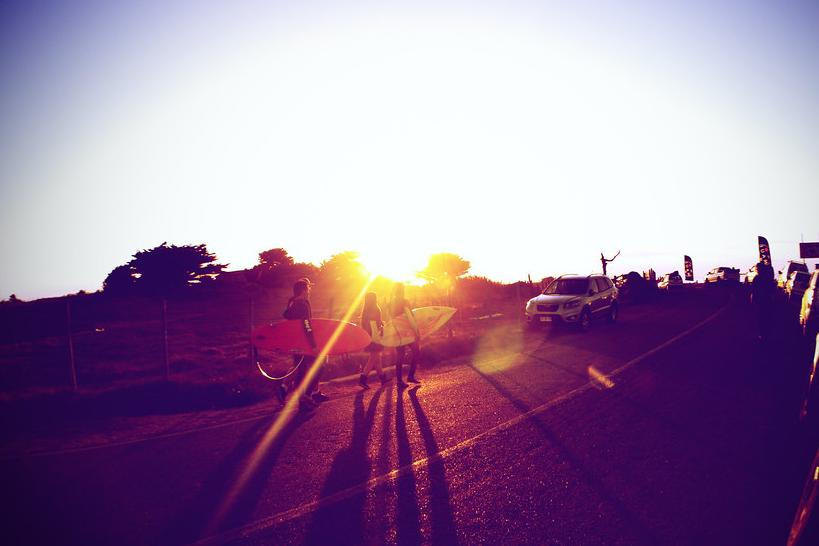
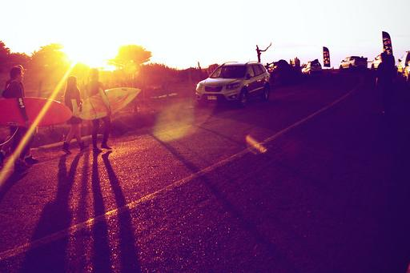
tags:
reason: Candidate B improves composition by tightening the frame to reduce excessive empty sky (eliminating distraction), enhancing subject prominence and dynamic balance. The lower horizon emphasizes the long shadows and road leading into the scene, strengthening depth and visual flow. All key subjects (surfers, boards, car, background figure) remain fully visible with better proportional weighting. Lighting and color grading are consistent, and the tighter crop avoids the overexposed upper sky in A, improving overall tonal balance without introducing artifacts.
notes: FCDB ranking pair. photo_id=15137530922, pair_index=3, source_votes=4, edit_votes=1. source=crop_1, edit=crop_0, preference_strength=strong.


tags:
reason: Candidate B improves composition by reducing excessive dark foreground (especially the lower-left shadowed area), resulting in better balance and more even distribution of visual weight. The horizon is slightly higher, giving more breathing room above the subjects and enhancing the sunset’s dominance without losing any key elements. All main subjects—surfers with boards, SUV, flags, and background figures—are fully preserved. Lighting and lens flare are handled more naturally in B, with less crushed shadow detail and more consistent color grading across the frame. The crop feels intentional and cinematic, whereas A’s lower edge cuts too close to the road surface, introducing visual clutter and diminishing the sense of open space.
notes: FCDB ranking pair. photo_id=15137530922, pair_index=7, source_votes=4, edit_votes=1. source=crop_1, edit=crop_0, preference_strength=strong.


tags:
reason: Candidate B improves composition by tightening the frame slightly, reducing excessive empty sky and enhancing subject prominence without cutting essential content. The stronger foreground-to-background depth and more balanced negative space around the surfers and cars create a more dynamic, focused image. Both images retain full subject identity and scene context, but B’s tighter crop eliminates marginal distraction while preserving all key elements (surfers, boards, vehicles, sunset). Lighting and lens flare are handled similarly, though B’s framing minimizes overexposed sky area, improving perceived contrast and visual cohesion.
notes: FCDB ranking pair. photo_id=15137530922, pair_index=8, source_votes=5, edit_votes=0. source=crop_1, edit=crop_0, preference_strength=strong.